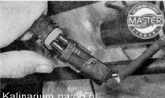
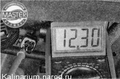
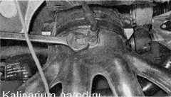
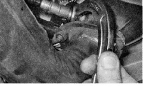

Датчик концентрации кислорода проверка и заменаНа автомобиле установлено два датчика кислорода. Работа показана на верхнем датчике, нижний датчик проверяют аналогично. Датчики установлены рядом с каталитическим нейтрализатором, который при работе двигателя разогревается до высокой температуры. Во избежание ожогов датчики концентрации кислорода проверяем и снимаем после остывания двигателя до безопасной температуры. Для выполнения работы потребуются: — мультиметр (в режиме вольтметра); — смотровая канава или эстакада (для снятия нижнего датчика); — специальный ключ для датчика кислорода. Проверка 1. Подготавливаем автомобиль к выполнению работы. 2. Отсоединяем колодку жгута проводов от колодки датчика концентрации кислорода. 3. Подсоединяем «минусовой» шуп вольтметра к «массе» двигателя. Включив зажигание, проверяем напряжение питания нагревательного элемента на выводе В (обозначение выводов нанесено на колодке жгута проводов). Напряжение на выводе должно быть не меньше 12 В. Если напряжение не поступает на колодку или оно меньше 12 В, значит, разряжена аккумуляторная батарея, неисправна цепь питания или неисправен ЭБУ. 4. Подсоединив «минусовой» щуп вольтметра к выводу С, измеряем напряжение между выводами А и С. Напряжение на выводах должно быть 0,45 В. Если напряжение не поступает на колодку или оно отличается более чем на 0,02 В, значит, неисправна цепь питания или неисправен ЭБУ. Снятие 1. Извлекаем держатель провода датчика концентрации кислорода из отверстия защитного экрана. 2. Ключом на 22 мм выворачиваем датчик из каталитического коллектора и снимаем датчик. 
Для отворачивания нижнего датчика необходим специальный ключ. 
При отсутствии такого ключаможно отрезать ручку обычного рожкового ключа на 22 мм. При необходимости нижний датчик можно вывернуть из снятого каталитического коллектора. Совет Убедиться в неисправности датчика можно, заменив его заведомо исправным. Установка Устанавливаем датчик в последовательности, обратной снятию. |